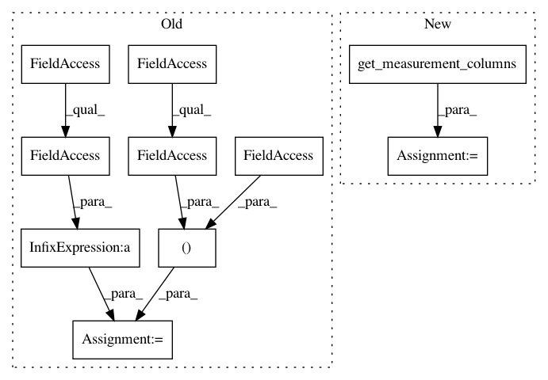

4248b81ded66fb12b92ffe90c6399fb9b4df0bce,cellprofiler/modules/identifysecondaryobjects.py,IdentifySecondaryObjects,get_measurement_columns,#IdentifySecondaryObjects#Any#,800
Before Change
"""Return column definitions for measurements made by this module"""
columns = identify.get_object_measurement_columns(self.objects_name.value)
columns += [(self.primary_objects.value,
cellprofiler.measurement.FF_CHILDREN_COUNT % self.objects_name.value,
cellprofiler.measurement.COLTYPE_INTEGER),
(self.objects_name.value,
cellprofiler.measurement.FF_PARENT % self.primary_objects.value,
cellprofiler.measurement.COLTYPE_INTEGER)]
if self.method != M_DISTANCE_N:
columns += super(IdentifySecondaryObjects, self).get_measurement_columns(pipeline)
if self.wants_discard_edge and self.wants_discard_primary:
columns += identify.get_object_measurement_columns(self.new_primary_objects_name.value)
columns += [(self.new_primary_objects_name.value,
cellprofiler.measurement.FF_CHILDREN_COUNT % self.objects_name.value,
cellprofiler.measurement.COLTYPE_INTEGER),
(self.objects_name.value,
cellprofiler.measurement.FF_PARENT % self.new_primary_objects_name.value,
cellprofiler.measurement.COLTYPE_INTEGER)]
columns += [(self.primary_objects.value,
cellprofiler.measurement.FF_CHILDREN_COUNT % self.new_primary_objects_name.value,
cellprofiler.measurement.COLTYPE_INTEGER),
(self.new_primary_objects_name.value,
cellprofiler.measurement.FF_PARENT % self.primary_objects.value,
cellprofiler.measurement.COLTYPE_INTEGER)]
return columns
def get_categories(self, pipeline, object_name):
After Change
)
]
else:
columns = super(IdentifySecondaryObjects, self).get_measurement_columns(pipeline)
if self.method != M_DISTANCE_N:
columns += self.apply_threshold.get_measurement_columns(pipeline, object_name=self.y_name.value)
return columns
def get_categories(self, pipeline, object_name):
In pattern: SUPERPATTERN
Frequency: 3
Non-data size: 10
Instances
Project Name: CellProfiler/CellProfiler
Commit Name: 4248b81ded66fb12b92ffe90c6399fb9b4df0bce
Time: 2017-05-01
Author: mcquin@users.noreply.github.com
File Name: cellprofiler/modules/identifysecondaryobjects.py
Class Name: IdentifySecondaryObjects
Method Name: get_measurement_columns
Project Name: CellProfiler/CellProfiler
Commit Name: 9dac5cc5639e74cf22198f1daba28a9ac182b6f0
Time: 2019-08-13
Author: bethac07@users.noreply.github.com
File Name: cellprofiler/modules/relateobjects.py
Class Name: RelateObjects
Method Name: get_measurement_columns
Project Name: CellProfiler/CellProfiler
Commit Name: c65430b778f645fb8bc5ff81f08d8cf8c547a52d
Time: 2009-10-16
Author: thouis@1fc53939-2000-0410-845c-e8453a809027
File Name: pyCellProfiler/cellprofiler/modules/measureimagequality.py
Class Name: MeasureImageQuality
Method Name: test_valid